137本（投稿準備OK）・2026/10/1 23:02:38 更新 ・ note 下書き済み 84本 ・ 公開済み 18本
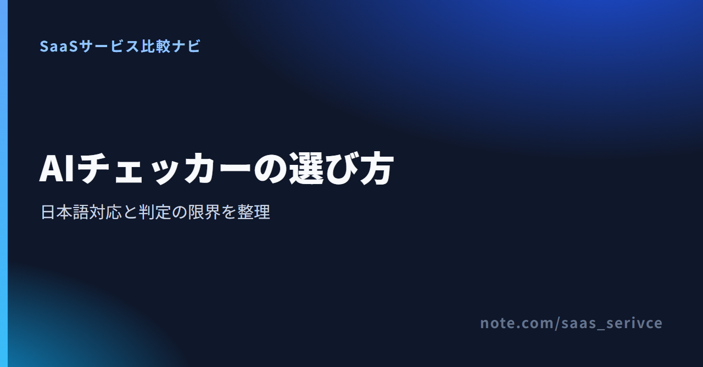
AIチェッカーおすすめ3選｜日本語対応・無料範囲・判定の限界を比較
note下書き済みAI・コンテンツ制作・7,344字

MeetGeekとClaapの無料枠を比較｜AI議事録の選び方と有料化の目安
note下書き済みAI・コンテンツ制作・6,304字

AI動画編集の工程別サービス3つ【2026年】文字起こし・日本語・無料枠で選ぶ
note下書き済みAI・コンテンツ制作・6,597字

AIナレーションおすすめツール4選｜無料枠・商用利用・料金で比較
note下書き済みAI・コンテンツ制作・6,643字
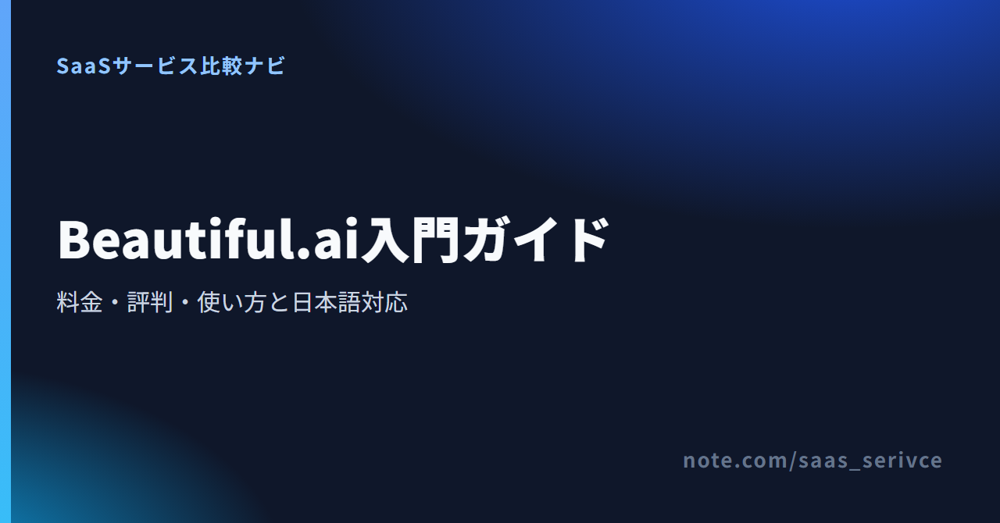
Beautiful.aiとは？料金・評判・使い方、日本語対応まで解説
note公開済みAI・コンテンツ制作・6,056字

Beautiful.aiは日本語で使える？英語UI・日本語フォント・サポートの対応範囲
note下書き済みAI・コンテンツ制作・4,074字
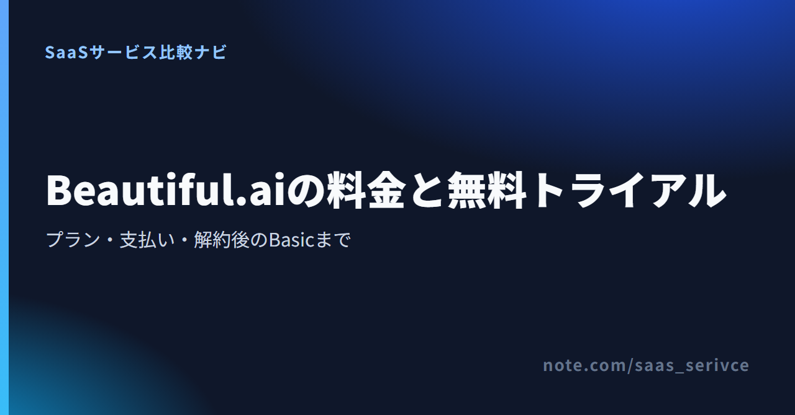
Beautiful.aiは無料で使える？料金プランと無料トライアル、解約後のBasicを解説
note下書き済みAI・コンテンツ制作・8,522字
Consensus AIとは？論文検索の使い方・料金・日本語対応を解説
AI・コンテンツ制作・4,737字

Consensus AIは日本語で使える？英語の画面と日本語で要約を出す設定を整理
note公開済みAI・コンテンツ制作・6,538字
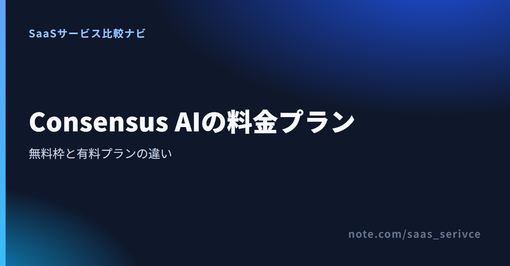
Consensus AIの料金プラン｜無料でできることと有料版との違い、日本からの支払い
AI・コンテンツ制作・5,104字
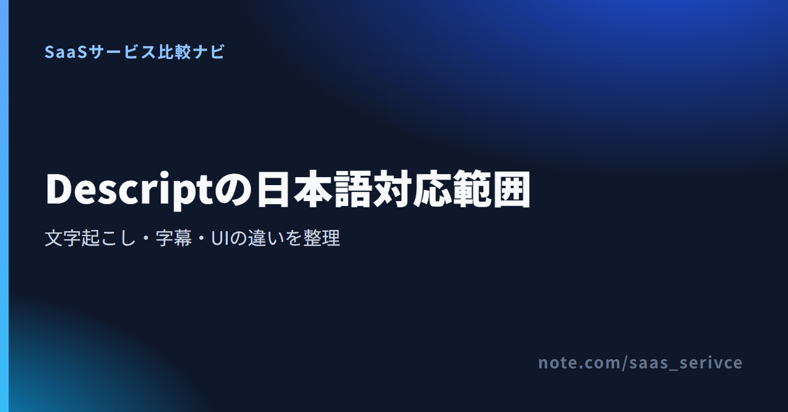
Descriptは日本語で使える？文字起こし・字幕・UI・サポートの対応範囲
note公開済みAI・コンテンツ制作・5,067字

ElevenLabsは日本語で使える？音声の自然さとVOICEVOX・CoeFontとの違い
note下書き済みAI・コンテンツ制作・5,880字
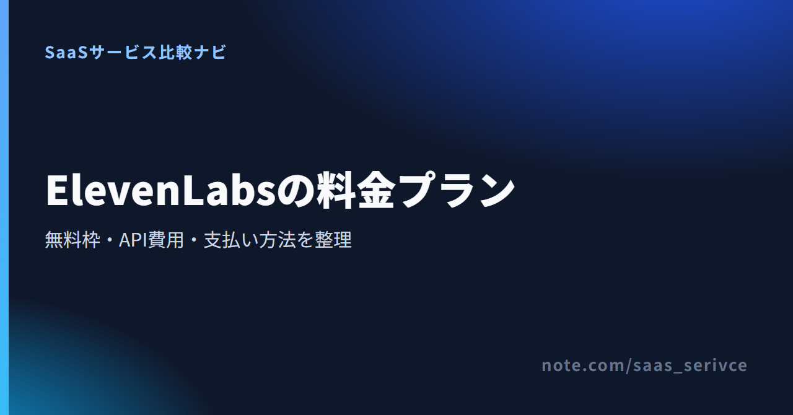
ElevenLabsの料金プラン【2026年版】無料枠・API費用・日本からの支払い方法
note下書き済みAI・コンテンツ制作・6,095字
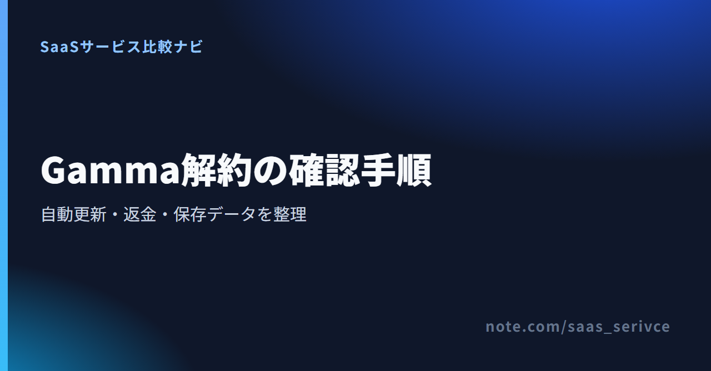
Gammaの解約方法｜自動更新を止める手順・返金条件・解約後のデータ
AI・コンテンツ制作・5,201字
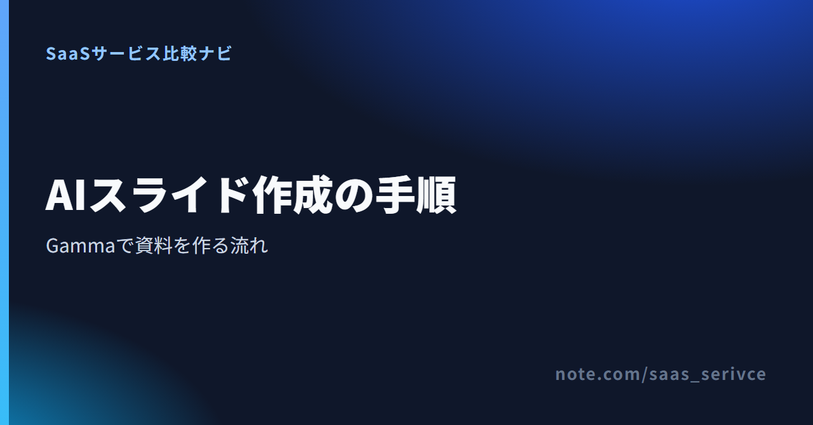
AIでスライドを自動作成する方法｜Gammaで資料を作る手順と直し方
note下書き済みAI・コンテンツ制作・5,288字

Gamma AIを日本語にする方法｜画面設定・日本語出力・サポートの対応範囲
note下書き済みAI・コンテンツ制作・5,130字

Gamma AI（gamma.app）の料金【2026年】無料でどこまで使える？AIクレジットの仕組み
note下書き済みAI・コンテンツ制作・7,364字
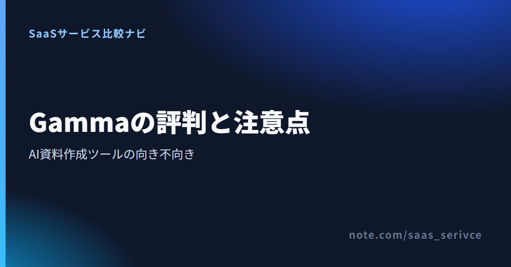
Gammaの評判・口コミ｜メリット・デメリット、安全性と向いている人
note公開済みAI・コンテンツ制作・5,211字
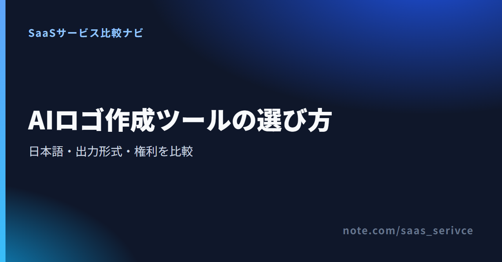
AIロゴ作成ツールおすすめ3選｜日本語・SVG・商用利用を比べる
note下書き済みAI・コンテンツ制作・6,378字
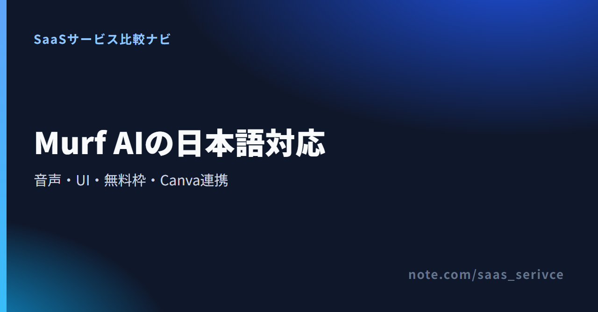
Murf AIは日本語で使える？音声・UI・無料枠とCanva連携を解説
note下書き済みAI・コンテンツ制作・4,598字

プレゼン資料作成AIツールおすすめ4選｜無料枠・日本語・PPTX出力を比較
note下書き済みAI・コンテンツ制作・5,600字
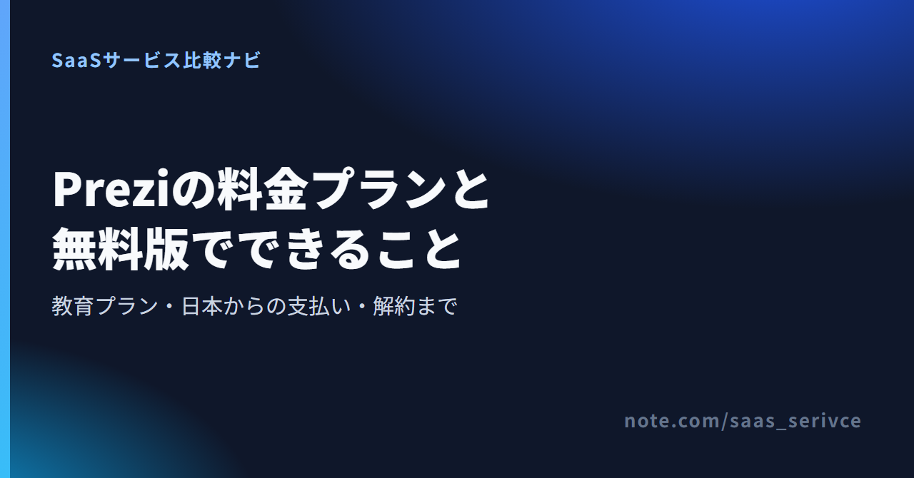
Preziの無料版でできることは？料金プランと教育向けプラン、日本からの支払い方法
note下書き済みAI・コンテンツ制作・7,735字
QuillBotは日本語で使える？対応機能・無料版の範囲と使い方を解説
AI・コンテンツ制作・5,296字
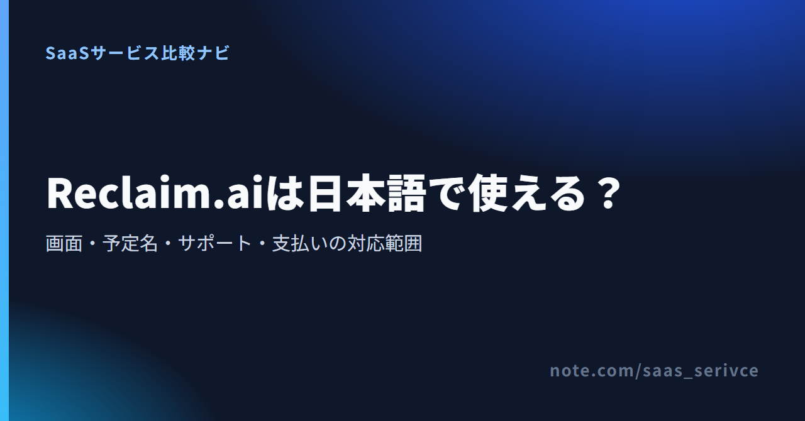
Reclaim.aiは日本語で使える？画面・予定名・サポート・支払いの対応範囲
note下書き済みAI・コンテンツ制作・6,142字

論文検索AIおすすめ2選｜公開論文の探索と手元資料の読解で使い分け
note下書き済みAI・コンテンツ制作・6,353字
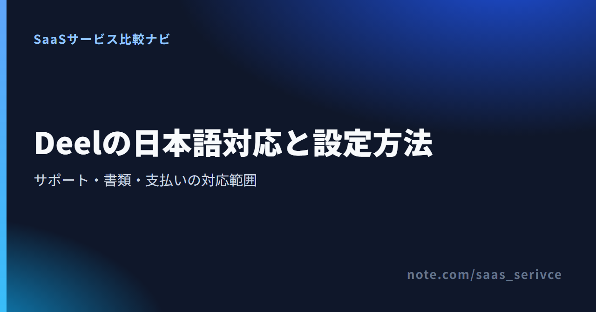
Deelは日本語で使える？日本語化の設定方法とサポート・支払いの対応範囲
note下書き済みHR・海外雇用・採用・7,034字
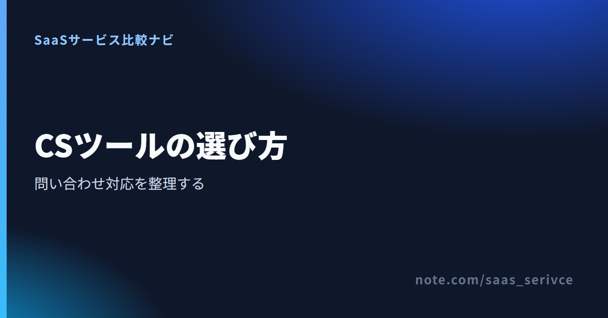
カスタマーサポートツールおすすめ5選｜料金・日本語対応・用途を比較
カスタマーサポート・チャット・7,185字

Tidioとは？AIチャットボットでできることと無料の範囲、料金・評判・導入方法
note公開済みカスタマーサポート・チャット・7,635字
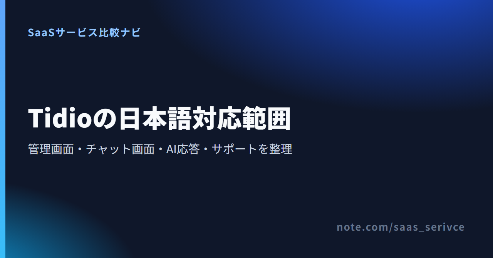
Tidioは日本語で使える？管理画面・チャット画面・AI応答・サポートの対応範囲
note下書き済みカスタマーサポート・チャット・7,040字

Zendeskの料金は？SupportとSuiteの違い・無料トライアル・少人数チームの総額
note下書き済みカスタマーサポート・チャット・5,991字
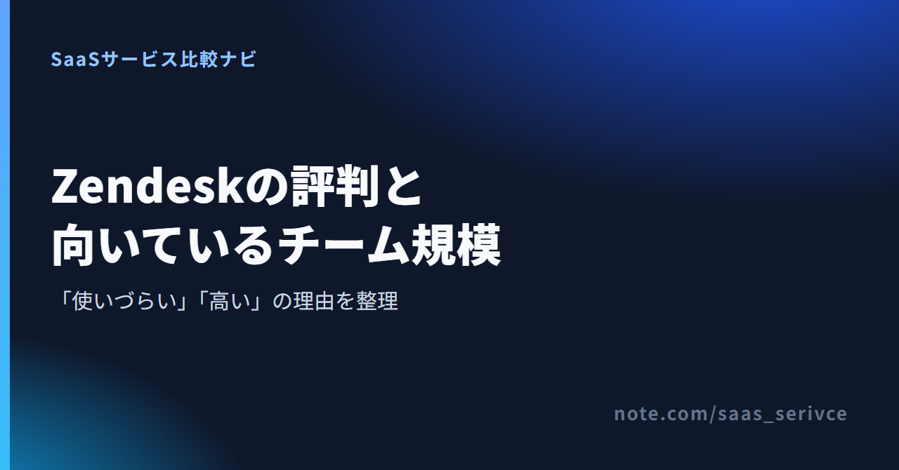
Zendeskの評判・口コミ｜「使いづらい」「高い」の理由と向いているチーム規模
note下書き済みカスタマーサポート・チャット・5,837字
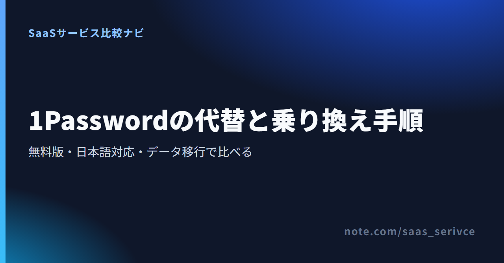
1Passwordの代替5選｜乗り換え先の選び方とデータ移行の手順
note下書き済みセキュリティ・ストレージ・10,629字
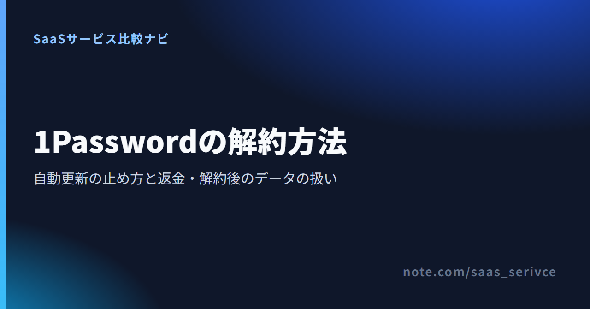
1Passwordの解約方法｜自動更新の止め方と返金・解約後のデータの扱い
note下書き済みセキュリティ・ストレージ・6,292字
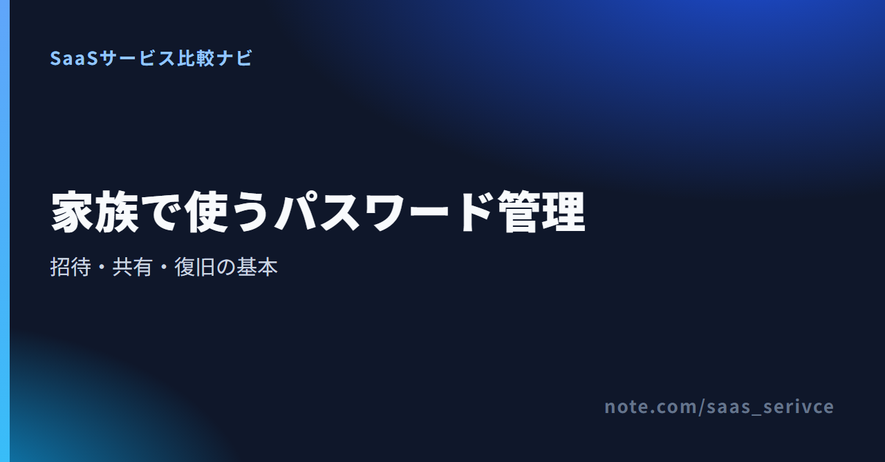
1Passwordファミリーの使い方｜家族の招待・共有・復旧まで解説
セキュリティ・ストレージ・5,686字
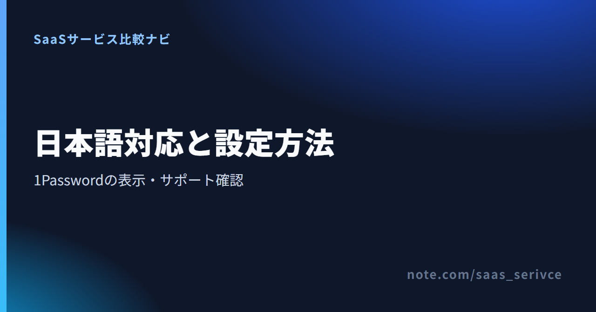
1Passwordは日本語で使える？対応範囲・設定方法・サポートを解説
note公開済みセキュリティ・ストレージ・6,356字
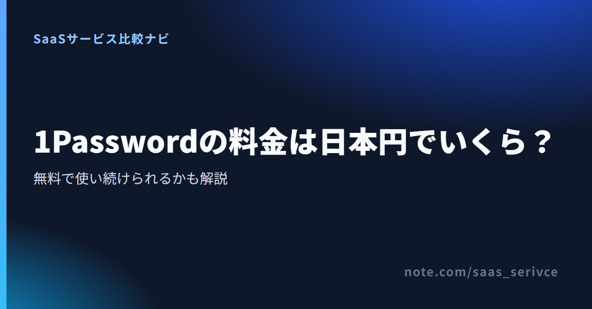
1Passwordの料金は日本円でいくら？無料で使い続けられるかどうかも解説
note下書き済みセキュリティ・ストレージ・6,199字
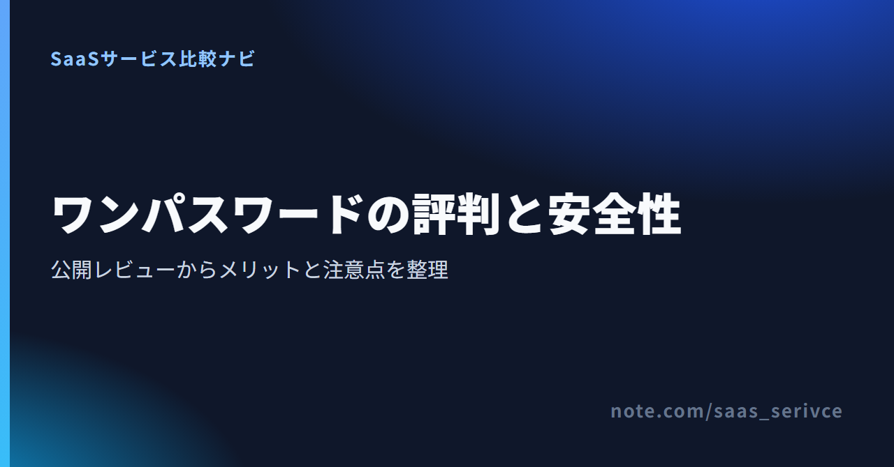
1Passwordの評判と安全性｜公開レビューでわかるメリット・デメリット
note下書き済みセキュリティ・ストレージ・6,841字
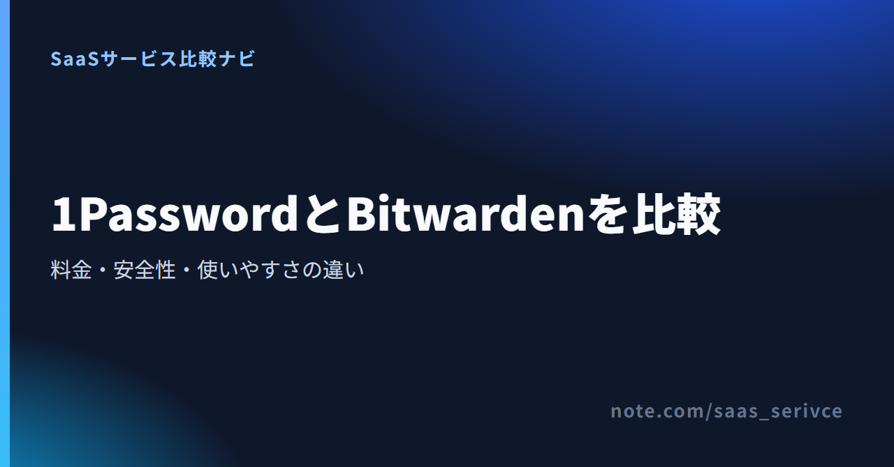
Bitwardenと1Passwordを比較｜料金・安全性・使いやすさでどっちを選ぶ？
note下書き済みセキュリティ・ストレージ・6,593字
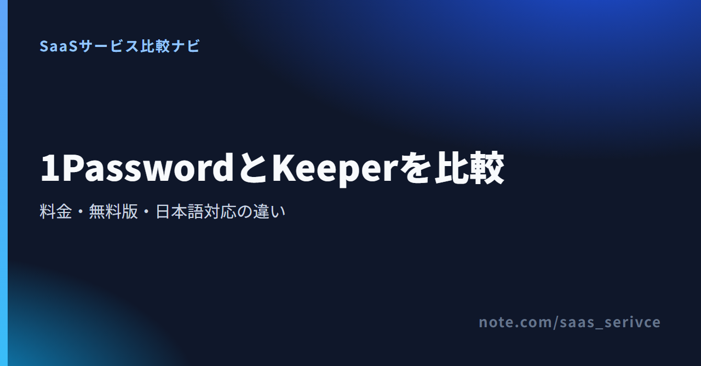
Keeperと1Passwordを比較｜料金・安全性・日本語対応で選ぶならどっち？
note下書き済みセキュリティ・ストレージ・8,183字
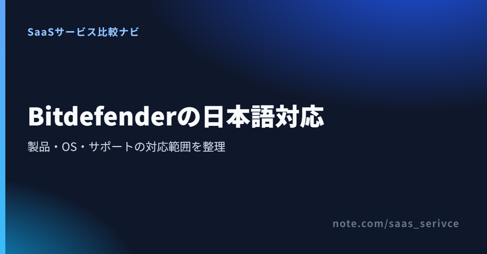
Bitdefenderは日本語で使える？対応範囲・日本語化の手順・サポートを解説
note下書き済みセキュリティ・ストレージ・5,408字

Bitdefenderは無料で使える？料金プラン・有料版との違い、日本からの支払い方法
セキュリティ・ストレージ・5,268字

Bitdefenderの評判は？メリット・デメリット、安全性と向いている人を解説
note下書き済みセキュリティ・ストレージ・6,111字
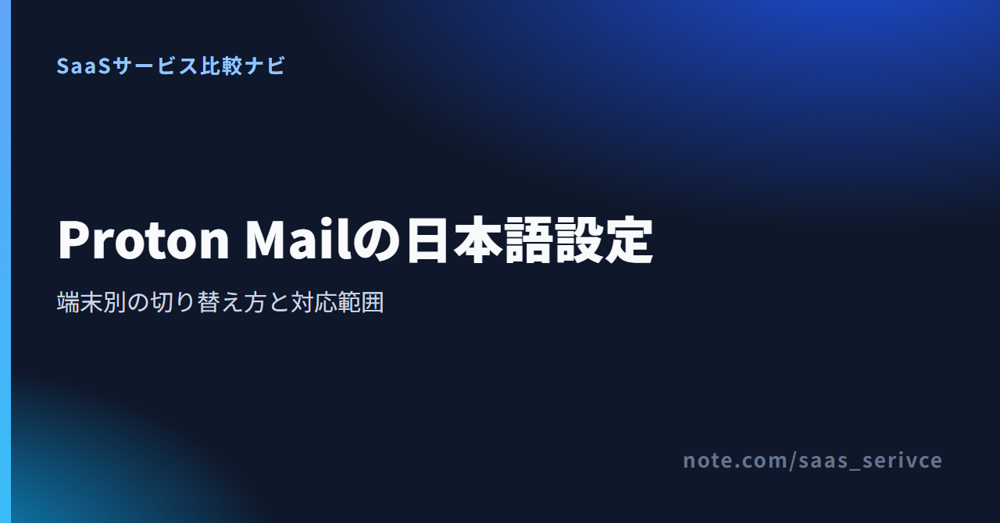
Proton Mailは日本語で使える？Web・iPhone・Androidの設定方法とサポート範囲
note下書き済みセキュリティ・ストレージ・4,080字
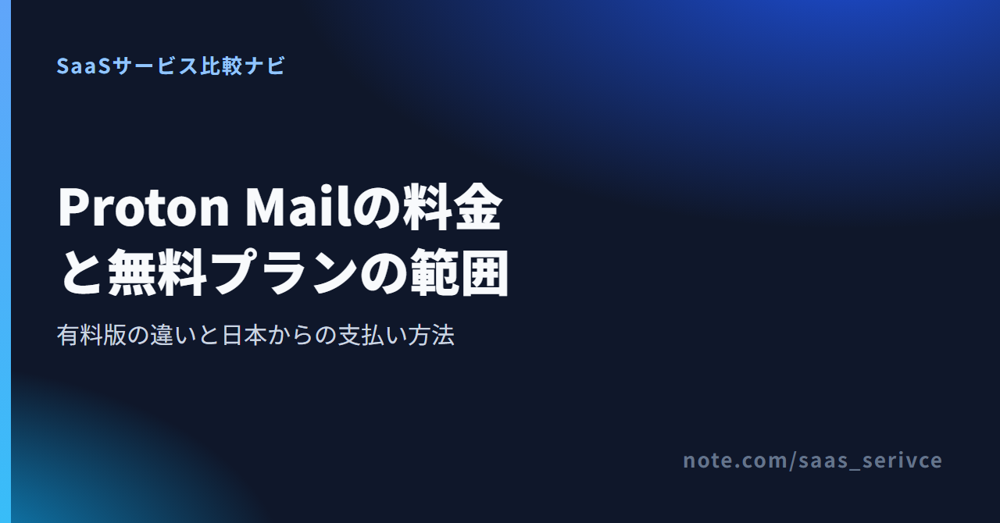
Proton Mailは無料でどこまで使える？料金プラン・有料版の違い・支払い方法
note下書き済みセキュリティ・ストレージ・7,554字

Proton Mailは危険？安全性・評判・情報開示と日本で使う注意点
note下書き済みセキュリティ・ストレージ・6,846字
Proton MailとGmailを比較｜暗号化・料金・日本語・連携の違い
セキュリティ・ストレージ・6,423字

Brevoとは？旧Sendinblueとの関係・機能・料金・使い方を解説
マーケ・メール配信・LP・SNS・6,661字
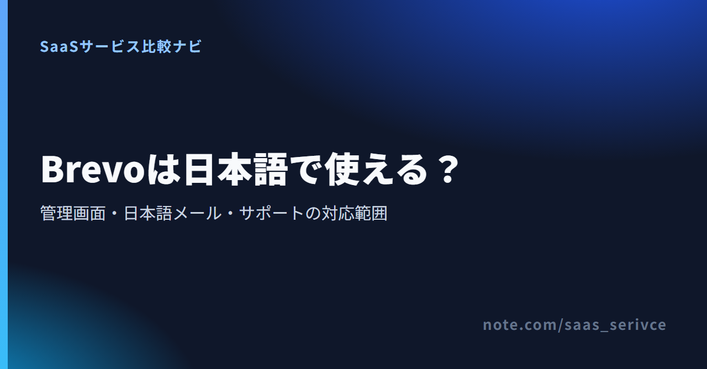
Brevoは日本語で使える？管理画面・日本語メール・サポートの対応範囲
note下書き済みマーケ・メール配信・LP・SNS・6,810字
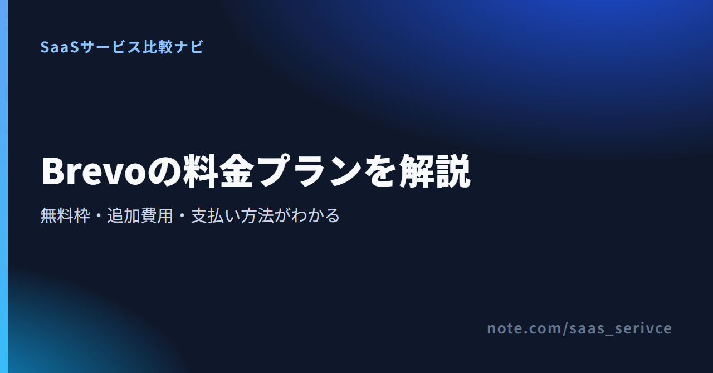
Brevoの料金プラン｜無料枠・追加費用・日本からの支払い方法を解説
note下書き済みマーケ・メール配信・LP・SNS・5,518字

ABテストツール比較【2026年】おすすめ6選｜海外製と国産の料金・日本語対応
note下書き済みマーケ・メール配信・LP・SNS・10,900字

メール配信システム比較｜海外7サービスを無料枠・日本語対応・自動化で選ぶ
note下書き済みマーケ・メール配信・LP・SNS・7,570字
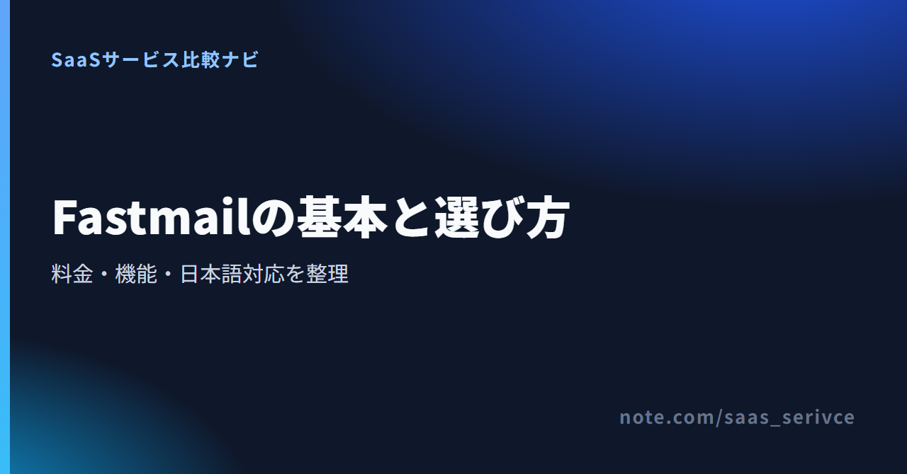
Fastmailとは？料金・機能・日本語対応とGmail・Proton Mailとの違いを解説
マーケ・メール配信・LP・SNS・5,833字

Fastmailは日本語で使える？画面の設定方法とサポート対応を解説
マーケ・メール配信・LP・SNS・5,248字
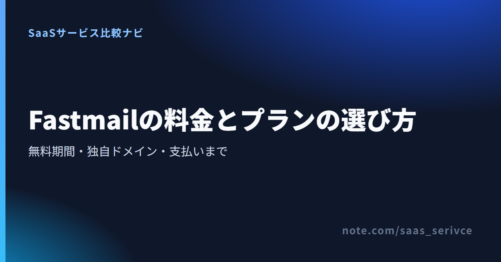
Fastmailの料金は日本円でいくら？無料期間と独自ドメインが使えるプランも解説
note下書き済みマーケ・メール配信・LP・SNS・6,986字
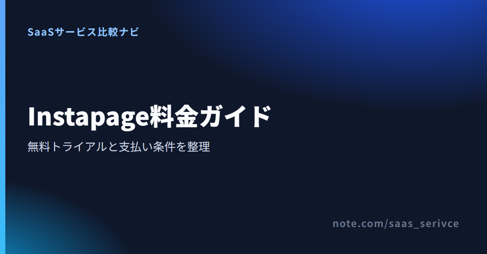
Instapageは無料？料金プラン・無料トライアルの条件・日本からの支払い
マーケ・メール配信・LP・SNS・5,625字
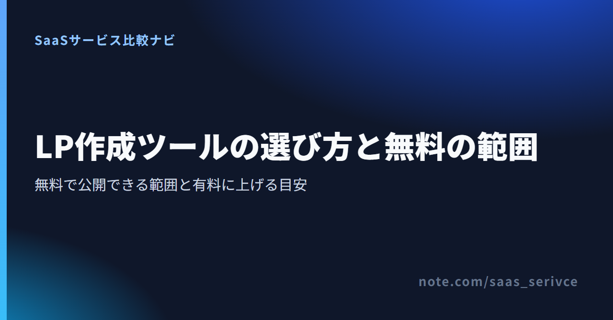
ランディングページ作成ツールおすすめ7選｜無料で公開できる範囲と有料に上げる目安
note下書き済みマーケ・メール配信・LP・SNS・8,556字

MAツール比較【2026年】中小企業向け海外製ツールの選び方と注意点
note公開済みマーケ・メール配信・LP・SNS・7,479字
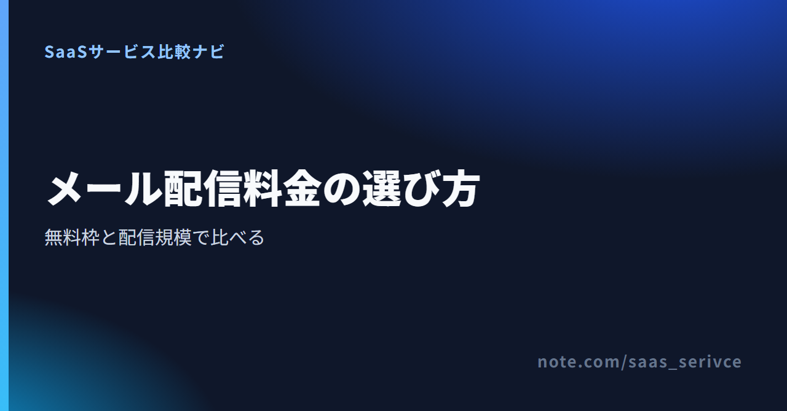
安いメール配信サービスの料金を比較｜無料枠と登録者数・配信数で選ぶ方法
note公開済みマーケ・メール配信・LP・SNS・8,967字
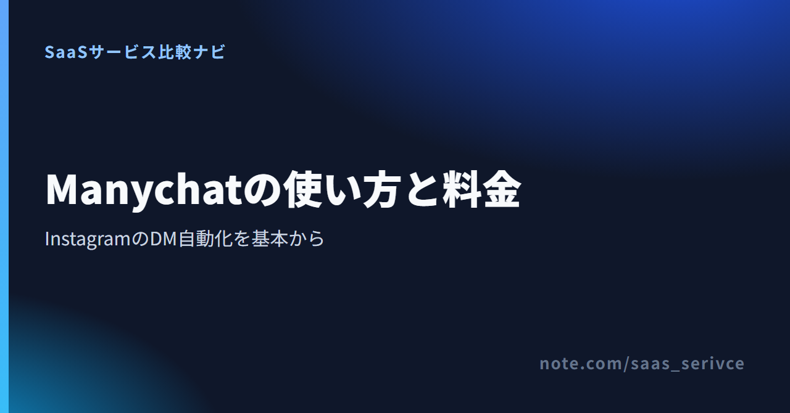
Manychatとは？InstagramのDM自動化・料金・使い方を解説
マーケ・メール配信・LP・SNS・6,336字
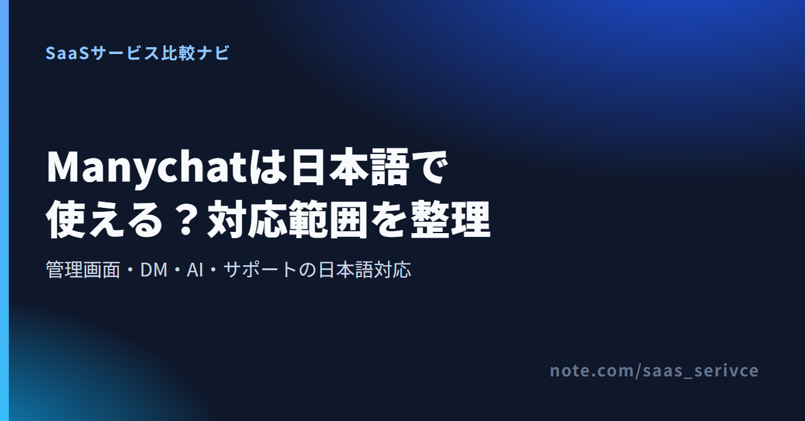
Manychatは日本語で使える？管理画面・メッセージ・AI・サポートの対応範囲
note公開済みマーケ・メール配信・LP・SNS・6,968字

Manychat（メニーチャット）の料金【2026年版】無料版の制限と有料プランの選び方
note下書き済みマーケ・メール配信・LP・SNS・7,764字
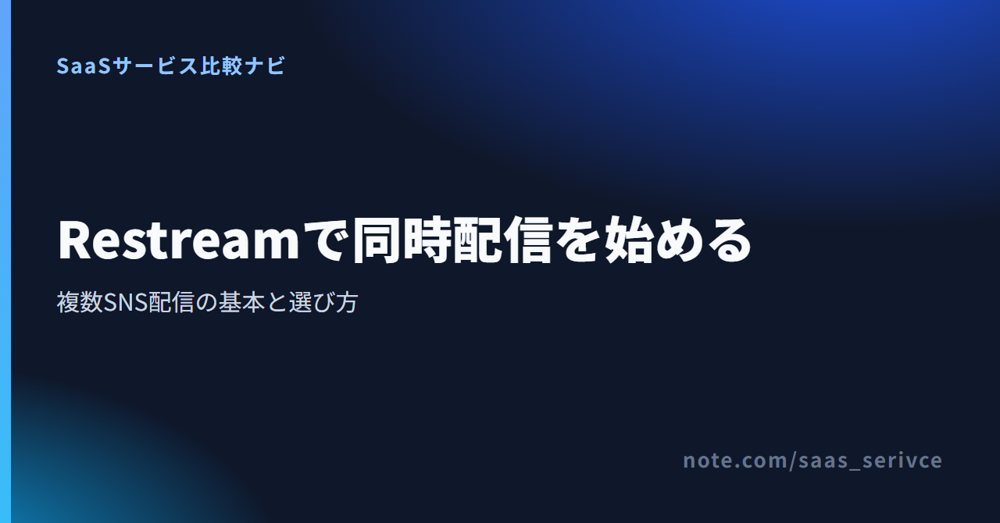
Restreamとは？複数SNSへの同時配信・料金・評判・使い方と日本語対応
マーケ・メール配信・LP・SNS・6,377字
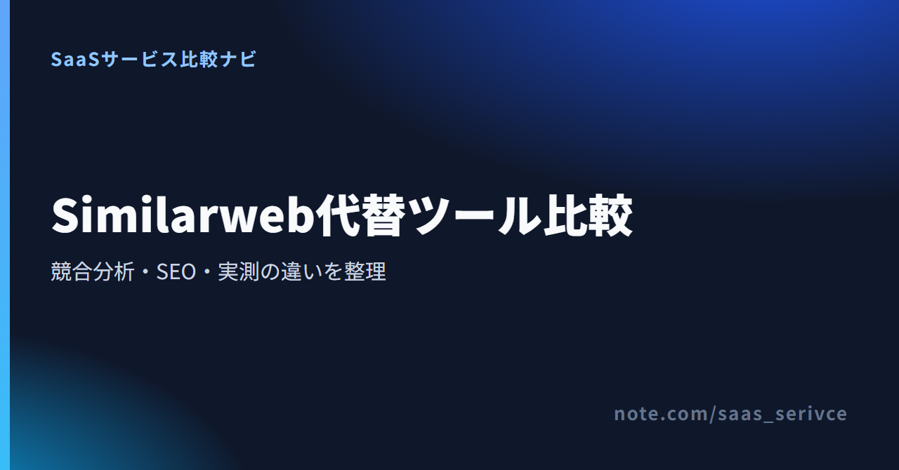
Similarwebの類似・代替ツールを比較｜無料枠・日本語対応と選び方
マーケ・メール配信・LP・SNS・5,851字

サイトのアクセス数を無料で調べる方法｜自社・他社別のツールと推計値の注意点
note下書き済みマーケ・メール配信・LP・SNS・6,975字
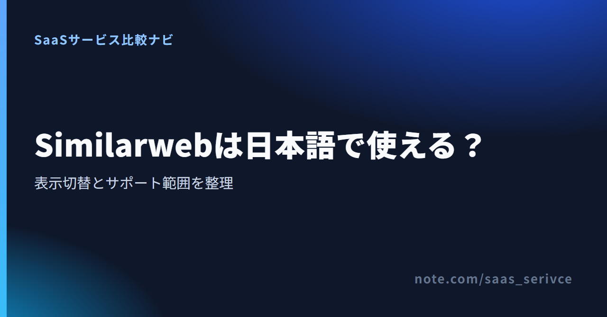
Similarwebは日本語で使える？日本語化の手順・サポート・請求書対応
マーケ・メール配信・LP・SNS・3,439字

Similarweb無料版でどこまで見られる？無料トライアルとの違いと有料版の料金
note下書き済みマーケ・メール配信・LP・SNS・5,130字

SimilarwebとSemrushを比較｜市場分析とSEO・料金・日本語の違い
マーケ・メール配信・LP・SNS・6,164字

SMTPリレーサービスは必要？使う場面と選び方、無料から試せるSMTP2GOなど4選
note公開済みマーケ・メール配信・LP・SNS・7,446字
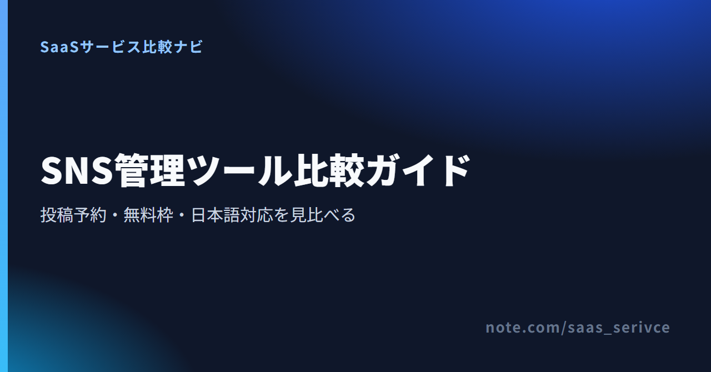
SNS管理ツールおすすめ6選｜料金・無料枠・日本語対応の違いと選び方
マーケ・メール配信・LP・SNS・7,489字
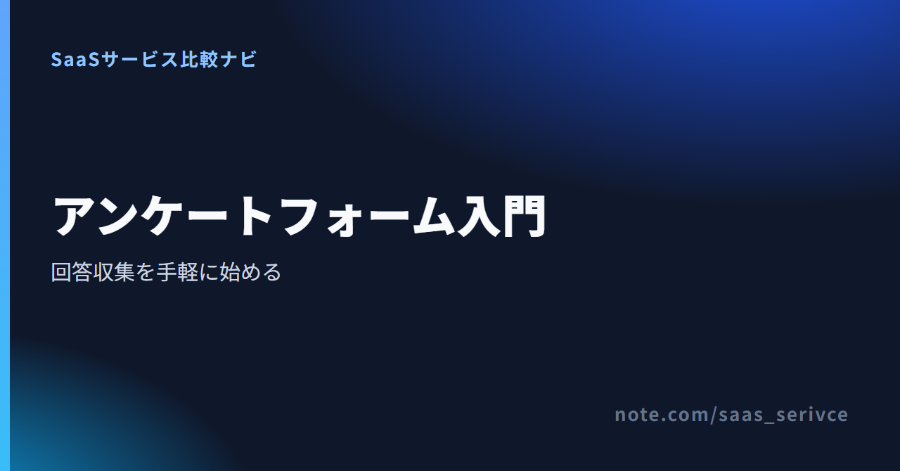
無料アンケートフォームおすすめ5選｜回答上限・分岐・日本語対応を比較
マーケ・メール配信・LP・SNS・7,067字
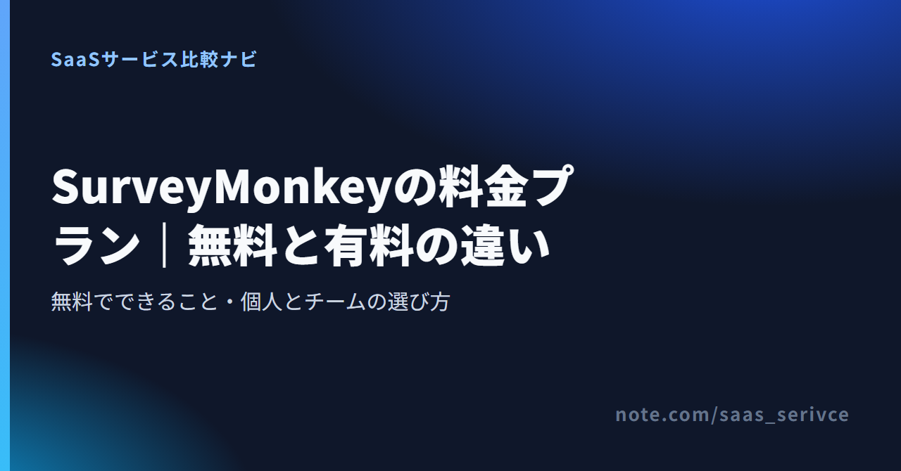
SurveyMonkey（サーベイモンキー）の料金プラン｜無料でできることと有料との違い
note公開済みマーケ・メール配信・LP・SNS・7,227字
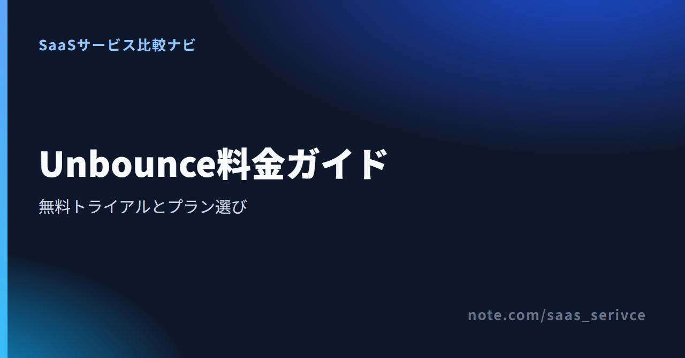
Unbounceの無料トライアルと料金｜プランの違い・日本での支払い・解約後
マーケ・メール配信・LP・SNS・5,374字

ウェビナーツール比較｜おすすめ7選を課金の仕組み・日本語対応・自動配信で選ぶ
note下書き済みマーケ・メール配信・LP・SNS・10,452字
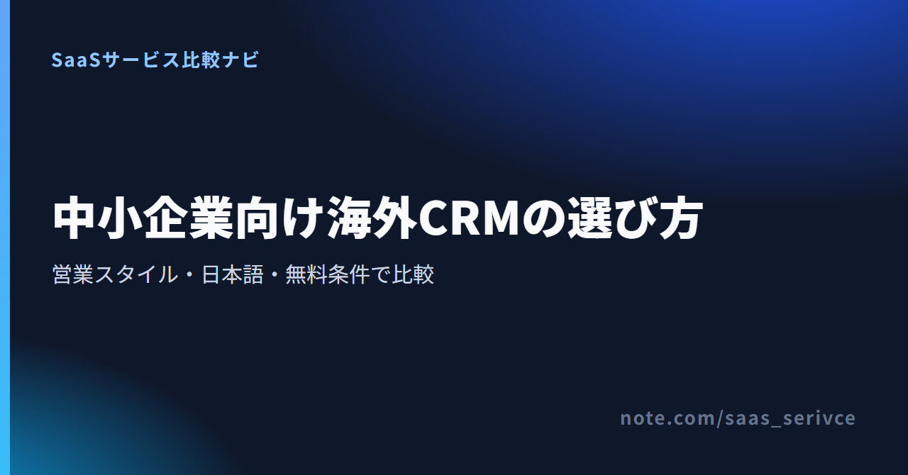
CRM比較【2026年】中小企業向け海外CRM6選｜料金・日本語・選び方
note下書き済み営業・CRM・リード獲得・8,861字
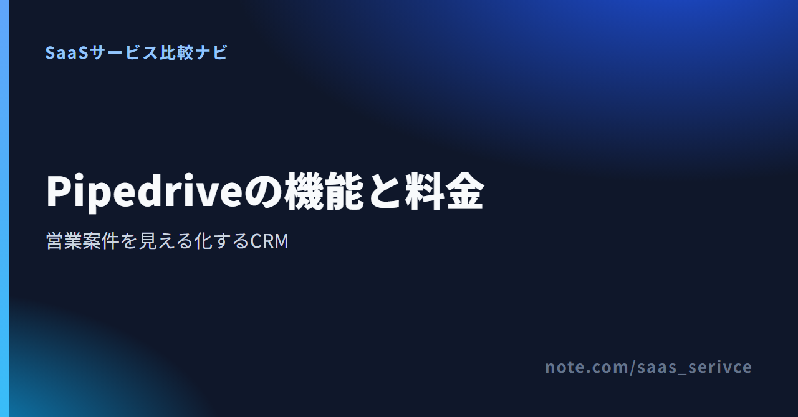
Pipedriveとは？機能・料金・評判、日本語対応と向いている会社を解説
営業・CRM・リード獲得・6,046字

Pipedriveの料金プラン｜無料トライアルと追加費用、日本からの支払いを解説
営業・CRM・リード獲得・4,992字
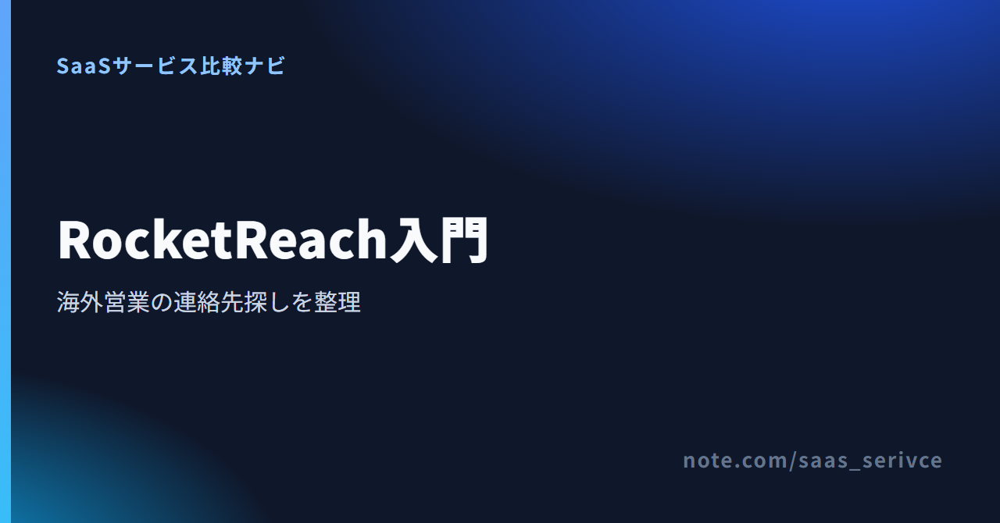
RocketReachとは？料金・評判・使い方、日本語対応と他社との違いまで解説
営業・CRM・リード獲得・6,055字

Bright Dataとは？機能・料金・使い方と日本から契約するときの注意点を解説
note下書き済み開発・インフラ・データ・6,352字
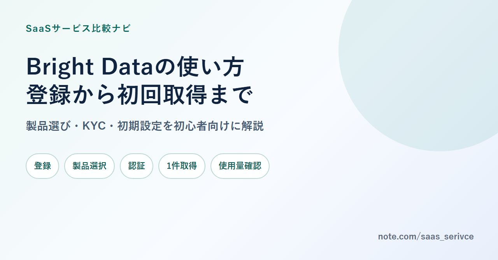
Bright Dataの使い方【初心者向け】登録・製品選びから初回のデータ取得まで
開発・インフラ・データ・6,246字
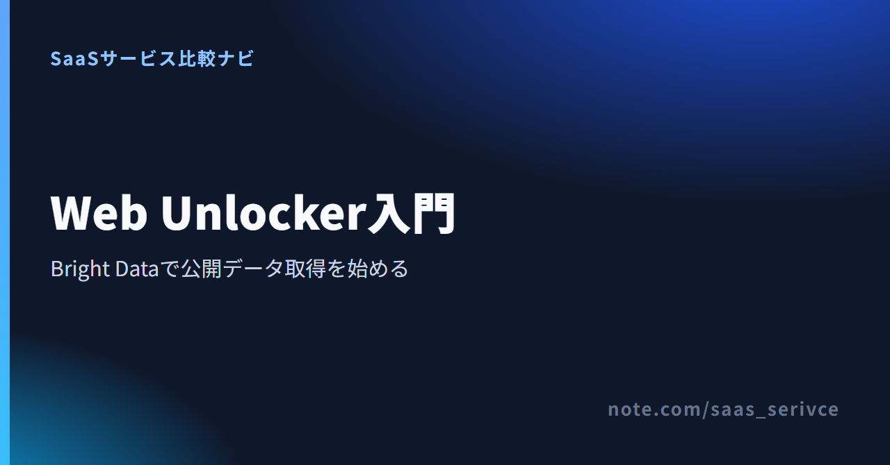
Web Unlockerとは？Bright Dataの仕組み・使い方・料金と無料枠を解説
開発・インフラ・データ・5,163字
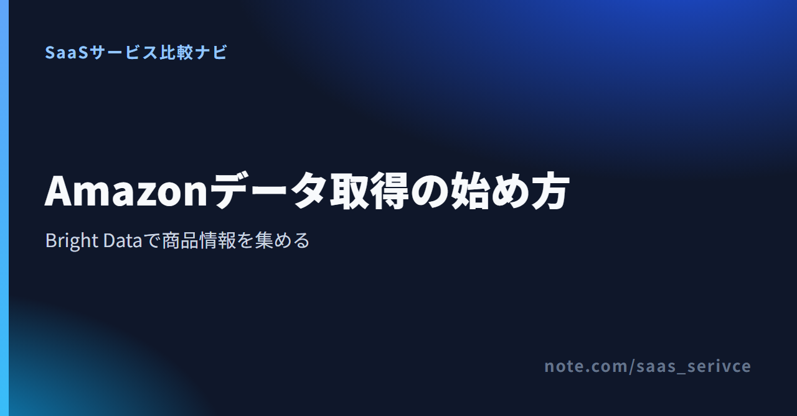
Amazonスクレイピングツールの選び方｜Bright Dataで商品データを取得
開発・インフラ・データ・6,343字
Bright Dataの料金プラン｜無料枠・課金単位・日本からの支払いを解説
note下書き済み開発・インフラ・データ・6,690字
Gravity Formsは日本語で使える？設定方法・フォーム・通知・サポートを解説
開発・インフラ・データ・5,169字

Netlifyは日本語で使える？管理画面の言語・日本語サイトの注意点・代替候補
note公開済み開発・インフラ・データ・6,942字

Netlifyの料金プラン｜無料枠の制限・有料との違い・日本からの支払い方法
note下書き済み開発・インフラ・データ・7,997字
ノーコードツール一覧【2026年】用途別のおすすめと無料枠・日本語対応を比較
note下書き済み開発・インフラ・データ・7,936字

Studioの料金プラン【2026年版】無料版の制限と目的別の選び方
開発・インフラ・データ・5,298字
Pineconeは日本語で使える？UI・文書検索・サポートの対応状況
開発・インフラ・データ・5,303字

Pineconeの料金プラン｜無料枠の範囲と有料版との違いを解説
開発・インフラ・データ・5,628字
Pleskとは？サーバー管理でできること・料金・日本語対応・選び方を解説
開発・インフラ・データ・5,700字
Pleskの料金プラン｜エディションの違いから無料体験、日本からの支払いまで
開発・インフラ・データ・4,931字

有料プロキシサーバーのおすすめ5選｜スクレイピング・広告検証など用途別の選び方
note下書き済み開発・インフラ・データ・6,963字
Runpodの料金はどう決まる？無料枠とGPU・ストレージの課金を解説
開発・インフラ・データ・4,993字
スクレイピングツールおすすめ5選｜料金・無料枠・日本語対応で比較
開発・インフラ・データ・6,980字
無料で使えるスクレイピングツール5選【2026年】無料枠の違いと有料化の目安
開発・インフラ・データ・6,842字

Softrの料金プラン【2026年8月改定対応】無料プランの範囲と人数別の選び方
note公開済み開発・インフラ・データ・8,296字
Softrの評判・口コミ｜安全性、メリット・デメリットと向いている業務
開発・インフラ・データ・5,297字

Webflow（ウェブフロー）とは？できること・料金・日本語対応とStudioとの違い
note下書き済み開発・インフラ・データ・7,491字
Webflowは日本語で使える？UIの日本語化とサイト制作・サポートの対応範囲
note下書き済み開発・インフラ・データ・7,508字
Webflowの料金プラン【2026年版】無料版の制限と有料プランの選び方
note下書き済み開発・インフラ・データ・6,008字
Webflowの評判・口コミ｜メリット・デメリットと向いている人
開発・インフラ・データ・6,231字
WebflowとWordPressを比較｜料金・SEO・日本語対応の違いと選び方
開発・インフラ・データ・6,518字
オンライン講座プラットフォーム比較｜おすすめ8選を日本語・決済・手数料で選ぶ
note下書き済み教育・コミュニティ・9,711字
Thinkificの料金プラン｜無料トライアル・手数料・日本からの支払い方法
note下書き済み教育・コミュニティ・7,274字

シフト管理アプリのおすすめは？無料・日本語対応のJibbleを選ぶ基準
note下書き済み業務効率・PM・タスク・6,622字

Backlog移行ツールとは？代替5選と乗り換え前の確認ポイント
業務効率・PM・タスク・6,762字
Backlogの料金プランを比較｜2027年改定・無料枠・チーム人数別の選び方
note公開済み業務効率・PM・タスク・6,828字

Backlogのセキュリティと評判｜使いにくい点・デメリットを解説
業務効率・PM・タスク・5,464字
AsanaとBacklogを比較｜料金・機能・日本語対応で自社に合うのはどっち？
業務効率・PM・タスク・6,349字

ClickUpは日本語で使える？ベータUIの設定方法・使い方・サポートの対応範囲
note下書き済み業務効率・PM・タスク・5,460字
ClickUpの料金プラン｜無料版の制限・有料版との違い・支払い方法
業務効率・PM・タスク・5,508字
Miroの代替ツール7選｜乗り換える理由別に無料版の制限と日本語対応を比較
note公開済み業務効率・PM・タスク・8,748字
Miroの解約方法｜自動更新を止める手順・返金ルール・解約後のボード
業務効率・PM・タスク・5,077字

Miroは日本語で使える？設定方法と対応範囲、日本語サポートの有無を解説
note下書き済み業務効率・PM・タスク・4,535字

Miroの料金プランは？無料版でできること・有料版の違い・チーム総額
note下書き済み業務効率・PM・タスク・4,694字
ワークマネジメントツールとは？タスク管理との違いとmonday.comの活用例
業務効率・PM・タスク・4,822字
monday.comは日本語で使える？設定方法・サポート・支払いの対応範囲
業務効率・PM・タスク・4,386字

monday.comの料金プラン【2026年版】無料版との違い・人数別の選び方を解説
note下書き済み業務効率・PM・タスク・5,997字
monday.comの評判・口コミ｜メリット・デメリットと「料金が高い」の理由
note公開済み業務効率・PM・タスク・6,079字

プロジェクト管理ツール比較【2026年】料金・日本語で選ぶおすすめ6製品
note下書き済み業務効率・PM・タスク・8,495字
タスク管理アプリおすすめ｜個人向け2選＋共同作業向け6選を比較
note下書き済み業務効率・PM・タスク・6,505字
工数管理ツールおすすめ4選｜時間記録・稼働把握・無料枠・料金を比較
業務効率・PM・タスク・6,741字
Todoistの解約方法｜契約経路別に自動更新を止める手順・返金条件・退会との違い
業務効率・PM・タスク・6,502字

Todoistの使い方【初心者向け】登録・初期設定から基本操作・連携まで
業務効率・PM・タスク・6,759字
Todoistの料金プラン【2026年版】無料版と有料版の違い・選ぶポイント
note下書き済み業務効率・PM・タスク・5,310字
TickTickとTodoistを比較｜料金・機能・日本語対応の違いと選び方
業務効率・PM・タスク・6,389字
Toggl Trackは日本語で使える？スマホ版・Web版の対応範囲と設定方法
note下書き済み業務効率・PM・タスク・5,006字
Toggl Track無料版でできること｜料金プランの違い・請求単価・日本からの支払い
note下書き済み業務効率・PM・タスク・6,678字

Wrikeの料金プラン｜無料プランでできること・人数別の年間費用・日本からの支払い
note公開済み業務効率・PM・タスク・7,729字

Airwallex（エアウォレックス）とは？日本で使える範囲と手数料・安全性を整理
note下書き済み金融・会計・法人設立・7,510字

Airwallexの評判・口コミ｜安全性と日本法人が使える機能を解説
金融・会計・法人設立・5,751字
DocSendとは？資料の閲覧追跡・電子署名・データルームの違いと料金・評判・使い方
契約・書類・PDF・5,470字
DocSendの料金プラン｜無料トライアルと機能差、日本から申し込む前の確認点
契約・書類・PDF・4,897字
電子契約サービス比較｜海外製おすすめ5選と料金・日本語対応の選び方
note下書き済み契約・書類・PDF・9,824字
電子署名サービスの料金比較｜無料枠と送信数・利用人数別のプラン選び
note公開済み契約・書類・PDF・7,616字
Foxitの料金プラン｜無料Readerでできること・有料版との違い
契約・書類・PDF・5,861字

Foxit PDF Editorの評判｜メリット・デメリットと安全性を解説
note下書き済み契約・書類・PDF・6,272字